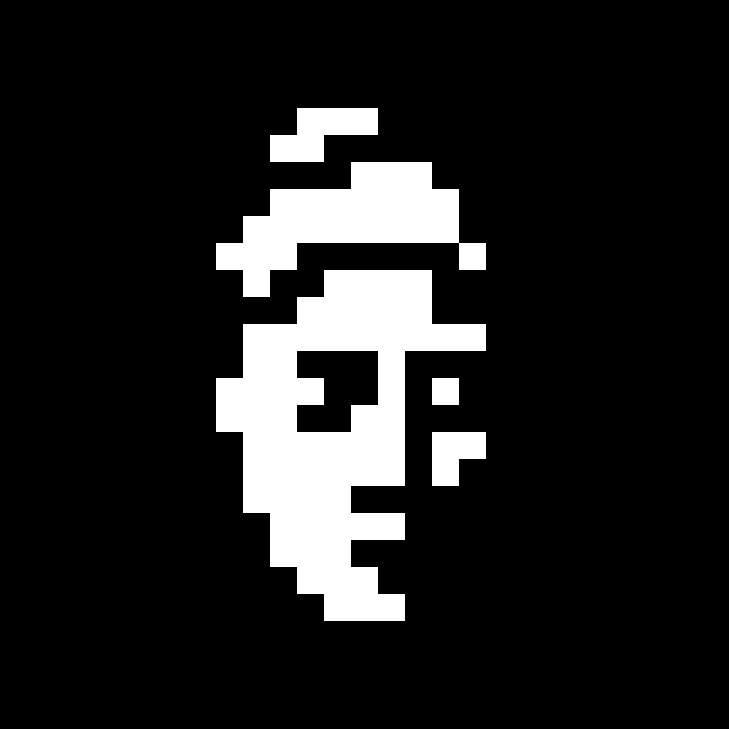

Trustworthy AI personas for cultural heritage
podobizna
Dolní Věstonice Portrait Head
The oldest known human portrait in the world

Czech
po·do·biz·na
A portrait. A likeness.
The image of a person.
We make AI portraits that stay true to their subject.
The problem
"Every AI persona today
optimizes for fluency.
None optimize for accountability."
The consequence
The model says something
it shouldn't.
One wrong answer. In a museum. In front of a school class.
The persona invents a quote. Attributes a belief the person never held. Answers a question about events that happened after they died.
Reputational risk. Legal exposure. EU AI Act liability.
And no one can explain why it happened.
Who this hurts
Museums. Documentaries.
Education publishers.
All deploying AI personas of real people. All without a governance framework.
The museum that put an AI version of Anne Frank in an exhibit. The documentary that used AI to reconstruct testimony. The textbook publisher whose AI tutor put words in Darwin's mouth.
Bespoke solutions cost €80,000–300,000 per deployment. Most institutions can't afford them. So they ship without guardrails, or don't ship at all.
The insight
The problem isn't the model.
It's that there's nothing between
the user and the model.
The solution
A governance layer.
Between every user
and every persona.
Architecture
The Persona Contract
│
intent filter · source enforcement · uncertainty · refusal
│
Persona Contract: evidence · role · risk
The model doesn't role-play. It operates under contract.
In practice
"Would Masaryk support
NATO today?"
The system intercepts.
"Masaryk died in 1948, before NATO existed. I can share what he wrote about collective security. Would that help?"
Friction is the feature.
Traction
Live prototype.
February 2026.
Bettina Wegner — East German singer-songwriter. Full mediation layer. Source citations. Period-aware responses.
podobizna.vercel.app
Market
60,000 museums
in the EU alone.
Business model
SaaS licensing.
Open-source core.
Museums, archives
Production companies
Creative Europe · CREA-CROSS-2026-INNOVLAB
We're raising €400K
to build the standard.
Open Persona Contract specification. Platform v1. Two institutional pilots. Deadline: 23 April 2026.
Seeking consortium partners — museums and documentary producers — from EU member states.